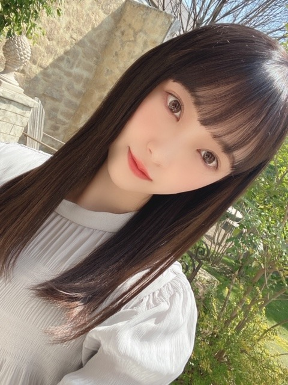
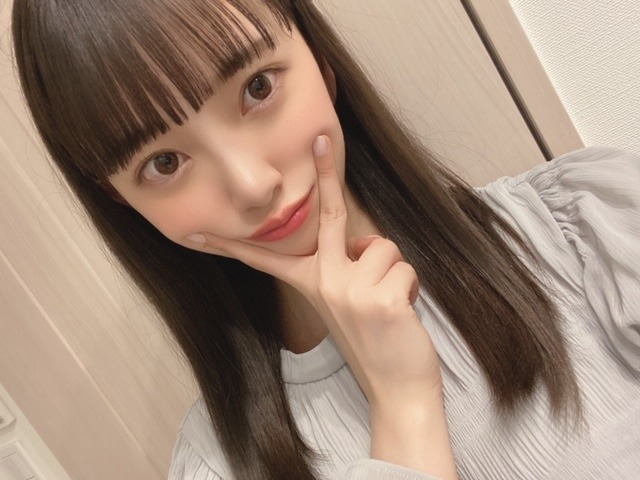

2020/0320Fri#絵心ない芸人

今日は19時〜
テレビ朝日 アメトーーク3時間SPの
絵心ない芸人に出させていただきます!
是非、ご覧ください☺︎
ちなみに、絵を描くのは幼少期から大好きです!



ポカポカした春日和は好きだけど
花粉つらい...
でははは
2020/03/20 14:24
コメント(375)
大爆笑でした。
堀さん、こんばんは。
アメトーク見ました。四足歩行男とピラニア男の対決？を皮切りに、めちゃくちゃ面白くてめちゃくちゃ笑いました。堀さんの真面目に丁寧に取り組む姿勢から笑いが生まれたんだと思います。皆さん沢山フォローしてくれてましたね。
それとネタフリの丁寧さをツッコんでもらえてよかったですね。何だか丁寧さから上品さを感じました。今になって思えば、ケンドーコバヤシさんのその指摘自体が、これからもネタフリを丁寧にしてくれというネタフリだったのかもしれませんね。
なんだかこのブログの幼少期から絵描くのが好きというのもネタフリに見えてきますね。幼少期と言えば、レコメンで鈴木さんが牛乳寒天を幼少期から好きと言ってましたね。長いこと一緒に居ても発見が有るのっていいですね。
それはそうと花粉大変なんですね。スギ花粉は舌下免疫療法が8割に効くとか聞きましたけど前年の秋から始めてなきゃダメらしくて残念です。舌下免疫療法が効くなら猫アレルギーの改善に舌で毛づくろいすればいいのかって思ったんですけど、お互い嫌でしょうね。
アメトーク見ました。四足歩行男とピラニア男の対決？を皮切りに、めちゃくちゃ面白くてめちゃくちゃ笑いました。堀さんの真面目に丁寧に取り組む姿勢から笑いが生まれたんだと思います。皆さん沢山フォローしてくれてましたね。
それとネタフリの丁寧さをツッコんでもらえてよかったですね。何だか丁寧さから上品さを感じました。今になって思えば、ケンドーコバヤシさんのその指摘自体が、これからもネタフリを丁寧にしてくれというネタフリだったのかもしれませんね。
なんだかこのブログの幼少期から絵描くのが好きというのもネタフリに見えてきますね。幼少期と言えば、レコメンで鈴木さんが牛乳寒天を幼少期から好きと言ってましたね。長いこと一緒に居ても発見が有るのっていいですね。
それはそうと花粉大変なんですね。スギ花粉は舌下免疫療法が8割に効くとか聞きましたけど前年の秋から始めてなきゃダメらしくて残念です。舌下免疫療法が効くなら猫アレルギーの改善に舌で毛づくろいすればいいのかって思ったんですけど、お互い嫌でしょうね。
お疲れ様です、堀さん！
アメトーーク3時間SP 絵心ない芸人、観ました！
そうですね、やっぱりおもしろい企画ですね
そうですね、リレーの絵とかね、ピラニアの歯でね、まあ、そうですね、真剣に競技をしている状況が、描かれていたのかな、とか考えましたね。
そうですね、拡大解釈かもしれないですね
ライオンの火輪くぐりの絵、個人的にライオンが好きなのでここは少し僕も番組を観ながら個人的にも描いてみたのですけど、そうですね、やっぱり、くぐれてなかったですね（笑）
そうですね、なんといいますか、火に当たっていましたね
そして、なんといってもね、全くわからないです、でしたでしょうか、ニュースキャスターのように語った堀さん、素敵でおもしろかったです
お疲れ様でした！楽しい時間だったなと思います
それでは、色々とあるかと思いますけど、健康に過ごせるよう願っています！
アメトーーク3時間SP 絵心ない芸人、観ました！
そうですね、やっぱりおもしろい企画ですね
そうですね、リレーの絵とかね、ピラニアの歯でね、まあ、そうですね、真剣に競技をしている状況が、描かれていたのかな、とか考えましたね。
そうですね、拡大解釈かもしれないですね
ライオンの火輪くぐりの絵、個人的にライオンが好きなのでここは少し僕も番組を観ながら個人的にも描いてみたのですけど、そうですね、やっぱり、くぐれてなかったですね
そうですね、なんといいますか、火に当たっていましたね
そして、なんといってもね、全くわからないです、でしたでしょうか、ニュースキャスターのように語った堀さん、素敵でおもしろかったです
お疲れ様でした！楽しい時間だったなと思います
それでは、色々とあるかと思いますけど、健康に過ごせるよう願っています！
ブログ更新ありがとー！
録画したので明日見ますね〜
録画したので明日見ますね〜
コロナウイルスに感染しないように体調管理して頑張ってねー後、ｱﾒﾄｰｰｰｰｰｰｸ見ます
ベレー帽未央奈可愛すぎ ❤
絵の下手さはピカイチ✨
絵の下手さはピカイチ✨
みおなちゃん、大好きです
初めまして
アメトーク観たよ！
面白かった(笑)
嘘がない感じで下手くそな絵を描いてる堀ちゃんのこと好きになったよ(笑)
芸人と物怖じしないで接してやるのを見たら、堀ちゃんはタレントに向いてるなと思ったよ
またテレビでの活躍期待してるね。
アメトーク観たよ！
面白かった(笑)
嘘がない感じで下手くそな絵を描いてる堀ちゃんのこと好きになったよ(笑)
芸人と物怖じしないで接してやるのを見たら、堀ちゃんはタレントに向いてるなと思ったよ
またテレビでの活躍期待してるね。
未央奈可愛いな ！
見たよ 可愛かった！
花粉つらいよね〜
花粉つらいよね〜
少しだけやけど､見ました
私より絵が上手なので､羨ましい‼️
私より絵が上手なので､羨ましい‼️
録画したー！あとで見ます。
絵、上手くなってるんかな…。
自称模写は上手いらしいから一度模写を見てみたい笑
いつも元気をありがとう。
絵、上手くなってるんかな…。
自称模写は上手いらしいから一度模写を見てみたい笑
いつも元気をありがとう。
未央奈ちゃん、おはよう。
絵心ない芸人、期待通りの楽しさ。
ありがとうございます。（笑）
前フリを必ず入れる辺り
匠の域に達してるね。
実際はそこまで…と思う絵もあったけど
比較で上手な絵を出されてアレは無し
だなぁと思った。
番組としては最高だけどね。
未央奈ちゃんも可愛かった〜
ブログで見せる雰囲気とは違って
コレも有りだね。
悩んでたゲームはどうぶつの森に
しましたか。
人気だよね。僕はやった事が無いんで
蚊帳の外なんですが、お勧めポイント
とかあったら教えて下さい。
では…んっ？ 1、2、3…
スーパーでははは。
絵心ない芸人、期待通りの楽しさ。
ありがとうございます。（笑）
前フリを必ず入れる辺り
匠の域に達してるね。
実際はそこまで…と思う絵もあったけど
比較で上手な絵を出されてアレは無し
だなぁと思った。
番組としては最高だけどね。
未央奈ちゃんも可愛かった〜
ブログで見せる雰囲気とは違って
コレも有りだね。
悩んでたゲームはどうぶつの森に
しましたか。
人気だよね。僕はやった事が無いんで
蚊帳の外なんですが、お勧めポイント
とかあったら教えて下さい。
では…んっ？ 1、2、3…
スーパーでははは。
未央奈ちゃん更新ありがとー！
アメトーーク見たよー！
どれもいい作品だったよ！
個人的にはライオンが好き。
絵を楽しむ心さえあれば、
誰だって絵心はあると思う！！
きっと…
いや、おそらく…
なんやかんやで絵心はあるかと…
なんやかんやは、
なんやかんやですっ！
とにかく楽しかったよ！
また見たいなー。
ではでは～
アメトーーク見たよー！
どれもいい作品だったよ！
個人的にはライオンが好き。
絵を楽しむ心さえあれば、
誰だって絵心はあると思う！！
きっと…
いや、おそらく…
なんやかんやで絵心はあるかと…
なんやかんやは、
なんやかんやですっ！
とにかく楽しかったよ！
また見たいなー。
ではでは～
前髪が素敵です。
また可愛いくなりましたね！
岐阜でもコロナがちらほら、、。
みおなさんも気をつけてくださいね^_^
また可愛いくなりましたね！
岐阜でもコロナがちらほら、、。
みおなさんも気をつけてくださいね^_^
かわいいですな(*´ω｀*)
堀ちゃん、お美しい！
ブログ更新ありがとう！
めちゃくちゃおもしろかったよ！ありがとう！
めちゃくちゃおもしろかったよ！ありがとう！
堀さん、おはようございます。
昨夜放送の『アメトーーーク！』絵心ない芸人回観ました！ どの作品も涙出るほど笑わせていただきました。
堀画伯の作品、どれもすばらしい。お手する犬がアニメになったのは、ある意味感動でした……ん？ ある意味って何ですか？ ある意味って＞自分（笑）
昨日も今日もいいお天気。花粉も多そうですから、どうぞお大事に。
ではまたコメント寄せます。
さらばだ、また会おう！（気球に乗って去りぬ～）
昨夜放送の『アメトーーーク！』絵心ない芸人回観ました！ どの作品も涙出るほど笑わせていただきました。
堀画伯の作品、どれもすばらしい。お手する犬がアニメになったのは、ある意味感動でした……ん？ ある意味って何ですか？ ある意味って＞自分（笑）
昨日も今日もいいお天気。花粉も多そうですから、どうぞお大事に。
ではまたコメント寄せます。
さらばだ、また会おう！（気球に乗って去りぬ～）
おはようございます。
昨日のアメトーーーク観ました！
どの絵も個性的で良かったですよ☺️
リレー、ライオンは特に
ニュースキャスター風も笑えました
それにしても、しょこたんは本当にうまいですね
これからも画伯として頑張ってね～
生ちゃんも出れれば良かったのにね(笑)
では、体調崩さず頑張ってください。
今日の歌謡祭も楽しみにしてます
昨日のアメトーーーク観ました！
どの絵も個性的で良かったですよ☺️
リレー、ライオンは特に
ニュースキャスター風も笑えました
それにしても、しょこたんは本当にうまいですね
これからも画伯として頑張ってね～
生ちゃんも出れれば良かったのにね(笑)
では、体調崩さず頑張ってください。
今日の歌謡祭も楽しみにしてます
未央奈、愛してる 今日も可愛いね ではでは❤️
おはよー堀ちゃん♪ヽ(´▽｀)/絵心 心じゃないよ❗passionだよ❗絵はヽ(￣▽￣)ノ見るね (*´∀｀)
絢音ちゃんとのツーショット下さい！
未央ちゃんと絢音ちゃんのペア好きです❤️
未央ちゃんと絢音ちゃんのペア好きです❤️
みおな
おはようございます
アメトーク見ました
今回もみおなのヘンテコな…じゃなくて芸術的な絵を見る事が出来て嬉しかったです
火の輪くぐりのライオンの絵でツボりました笑
俺も絵は下手な方だけど、模写はそれなりに行けます（乃木坂のあるメンバーと同じく事言ってるけどね）
珍しく三つ編みおなだったので可愛かったです
花粉辛いけど乗り越えましょう
今日の歌謡祭楽しみにしてます（今日の髪型は何となくハーフアップがいいな）
ありがとうございました
おはようございます
アメトーク見ました
今回もみおなのヘンテコな…じゃなくて芸術的な絵を見る事が出来て嬉しかったです
火の輪くぐりのライオンの絵でツボりました笑
俺も絵は下手な方だけど、模写はそれなりに行けます（乃木坂のあるメンバーと同じく事言ってるけどね）
珍しく三つ編みおなだったので可愛かったです
花粉辛いけど乗り越えましょう
今日の歌謡祭楽しみにしてます（今日の髪型は何となくハーフアップがいいな）
ありがとうございました
朝からヘークしゃん、クシャンの2連発ばっかり。未央奈～～～～～～～～～。
花粉症の人には辛い季節がやってきましたね。今日は、天気もいいので、これから、ちょいお出かけ。未央奈は？
じゃ、又、更新お願いします。
花粉症の人には辛い季節がやってきましたね。今日は、天気もいいので、これから、ちょいお出かけ。未央奈は？
じゃ、又、更新お願いします。
おはようございました
女の子の前髪は
右分けが可愛いのか
それとも左分けが可愛いのか
真剣に悩んでいます
乃木坂メンバーは
右分けが多いみたい
桜が開花しましたね
日本の誇る美しい花です
桜を見ていると
寂しいような悲しいような
そんな気持ちになりません？
最近はいろいろなことが
いろいろといろいろですね
思いどおりにいかないこと
気持ちが落ち込むことも
多いですが
待ち遠しいこと
楽しみなこともいっぱいあって
ぼちぼち楽しみながら
生きてます
今日もヌルッと頑張りましょう
女の子の前髪は
右分けが可愛いのか
それとも左分けが可愛いのか
真剣に悩んでいます
乃木坂メンバーは
右分けが多いみたい
桜が開花しましたね
日本の誇る美しい花です
桜を見ていると
寂しいような悲しいような
そんな気持ちになりません？
最近はいろいろなことが
いろいろといろいろですね
思いどおりにいかないこと
気持ちが落ち込むことも
多いですが
待ち遠しいこと
楽しみなこともいっぱいあって
ぼちぼち楽しみながら
生きてます
今日もヌルッと頑張りましょう
画伯、アメトーークでも才能を発揮されて。
テレビ見て久々に笑い泣きしました。
(バカにしてません)
テレビ見て久々に笑い泣きしました。
(バカにしてません)
堀ちゃん！！ (^_^)
◆◇◆緊急生放送！！FNS音楽特別番組 春は必ずくる◆◇◆
録画予約しました！！ (^。^)y-.。o○
※本日 午後7時より。
湿りがちな 日本をテレビの前で 元気にします！！ (^^♪
◆◇◆緊急生放送！！FNS音楽特別番組 春は必ずくる◆◇◆
録画予約しました！！ (^。^)y-.。o○
※本日 午後7時より。
湿りがちな 日本をテレビの前で 元気にします！！ (^^♪
はじめてコメントしました！ゆうなだよ☆
とっても可愛くて美人で憧れています！同い年とは思えません！！
メイクやファッションを伝授してほしいです！！
よろしくお願いします☆
とっても可愛くて美人で憧れています！同い年とは思えません！！
メイクやファッションを伝授してほしいです！！
よろしくお願いします☆
未央奈、おはよう
ありがとう
あなたの活躍で
毎日幸せになれてます
いつもいつも
元気をもらってばかりで
申し訳ないよ
僕は
声援を送ることしかできないけど
力になれてるかなぁ
ありがとう
あなたの活躍で
毎日幸せになれてます
いつもいつも
元気をもらってばかりで
申し訳ないよ
僕は
声援を送ることしかできないけど
力になれてるかなぁ
ずっと大爆笑でした
「こういうふうに描きたいんだろうな」というのは伝わってくるけど、それを上手く表現するのが難しいよね。
未央奈ちゃんが本当に楽しそうに出演していたのが、自分のことのように嬉しかったです
歌番組も楽しみなので、健康に気を付けて頑張ってね！
テレビの前で応援しています
「こういうふうに描きたいんだろうな」というのは伝わってくるけど、それを上手く表現するのが難しいよね。
未央奈ちゃんが本当に楽しそうに出演していたのが、自分のことのように嬉しかったです
歌番組も楽しみなので、健康に気を付けて頑張ってね！
テレビの前で応援しています
未央奈ちゃん、おはよう
選抜高校野球大会が
中止になり、凄くショックを
受けてます
特に、今年初めて甲子園に
出場を決めたチームの心情たるや
いかばかりかと...
父から教えられた言葉があります
一念発起は誰でもする
努力までならみんなする
そこから一歩抜き出るためには、
努力の上に辛抱という棒を立てろ
この棒に花が咲く
どんな状況になろうと
腐らず、諦めず
毎日練習しようと思います
選抜高校野球大会が
中止になり、凄くショックを
受けてます
特に、今年初めて甲子園に
出場を決めたチームの心情たるや
いかばかりかと...
父から教えられた言葉があります
一念発起は誰でもする
努力までならみんなする
そこから一歩抜き出るためには、
努力の上に辛抱という棒を立てろ
この棒に花が咲く
どんな状況になろうと
腐らず、諦めず
毎日練習しようと思います
今日気持ちいい天気だね～
でも、肌寒さもあるから注意しないとね！
アメトークおもしろかったね！
すでにチーム感がすごいあって団体芸って感じがする。
でも、肌寒さもあるから注意しないとね！
アメトークおもしろかったね！
すでにチーム感がすごいあって団体芸って感じがする。
チャァオ～～!☆彡
プリンセスみおちゃん❕❤️❤️❤️❤️❤️笑顔
アメトーク見たよぉ～～⤴️⤴️❕❤️❤️❤️❤️❤️笑顔
三つ編み みおちゃん、可愛えかったよ～～⤴️⤴️❕❤️❤️❤️❤️❤️笑顔
・・❕笑顔
みおちゃんの絵、ユニークで面白かったですよぉ～～⤴️⤴️❕❤️❤️❤️❤️❤️笑顔
いっぱい褒められていて、楽しかったよ～～⤴️⤴️❕❤️❤️❤️❤️❤️笑顔
ネタフリ丁寧、４足歩行、おじさん泥棒の微笑み、異世界の来訪者、ピラニア口でこっち見てる(笑)、北斗の拳、肩パット、笠地蔵と・・・
・・みおちゃん、優しい～⤴️⤴️⤴️❕❤️❤️❤️❤️❤️笑顔
また次回楽しみにしています❕❤️❤️❤️❤️❤️笑顔
それでは、またねぇ❕❤️❤️❤️❤️❤️笑顔
(σ≧▽≦)σ❤️❤️❤️
☆おすまし！より☆彡
未央奈～！
昨日のアメトークでは、ライオンの絵が特にツボでした～！
楽しかった～！！
ありがとね～(*^O^*)
昨日のアメトークでは、ライオンの絵が特にツボでした～！
楽しかった～！！
ありがとね～(*^O^*)
みおな流のアートは奥深過ぎで、意味深長でいつも時代の先端に歩いてたので、普通の人には少々理解難いかもしれません。でも私は分かるよ。何を分かると言えば、とにかくわかりますよ。はい、言葉なんかいらない心通じるだけで十分。笑。
生田先生との二大巨匠の対談を楽しみにしてます。
生田先生との二大巨匠の対談を楽しみにしてます。
プリンセスみおちゃん❕❤️❤️❤️❤️❤️笑顔
早く、お店に
シルバーリーフに、淡い青いピンクのしらさぎの羽の様な花弁の～～⤴️⤴️
ヤマト撫子が出ないかなぁ～❕❤️❤️❤️❤️❤️笑顔
めちゃめちゃ手に入れたい❕❤️❤️❤️❤️❤️笑顔
☆おすまし！より☆彡
やほやほー。セブンだよ(ฅ'ω'ฅ)♪
みおちゃん可愛い♡
お人形さんみたいに可愛いね♡
前髪ぱっつんめっちゃ似合う！
みおちゃんの可愛いが止まらない！
今日めっちゃ暖かいね
春だー！お昼寝したいzzz
では、今日も1日楽しんで生きましょうd(@^∇ﾟ)/ﾌｧｲﾄｯ♪
o(ﾟ▽＾)ﾉｼまたねぃ♪
みおちゃん可愛い♡
お人形さんみたいに可愛いね♡
前髪ぱっつんめっちゃ似合う！
みおちゃんの可愛いが止まらない！
今日めっちゃ暖かいね
春だー！お昼寝したいzzz
では、今日も1日楽しんで生きましょうd(@^∇ﾟ)/ﾌｧｲﾄｯ♪
o(ﾟ▽＾)ﾉｼまたねぃ♪
あ～可愛い、笑
昨日テレビ見ましたよ、未央奈めちゃくちゃ可愛いかったょ
観たよ！「アメトーーク3時間SP」。「乃木坂工事中」で鍛えられているだけあって「ネタフリ丁寧!!」さすがだね！
堀ちゃんの画を観た率直な感想はというと…「かわいい人は得だなあ」と（笑）
いつか堀ちゃんの画と美しい岐阜の風景が融合する日を楽しみにしたいね！
堀ちゃんの画を観た率直な感想はというと…「かわいい人は得だなあ」と（笑）
いつか堀ちゃんの画と美しい岐阜の風景が融合する日を楽しみにしたいね！
未央奈ー♪
アメトーーク見たよー！！
絵の面白さもだけど、ケンコバさん言ってたように、前振りがあるのでオチがちゃんとつけれるのが面白いよね！！
バナナマンさんといるからお笑いについてもめっちゃレベル高くなってるよね笑
未央奈の活躍はみんなを元気にするよ！
これからも体に気をつけて無理せず頑張ってねー！
いつでも応援してるー！
アメトーーク見たよー！！
絵の面白さもだけど、ケンコバさん言ってたように、前振りがあるのでオチがちゃんとつけれるのが面白いよね！！
バナナマンさんといるからお笑いについてもめっちゃレベル高くなってるよね笑
未央奈の活躍はみんなを元気にするよ！
これからも体に気をつけて無理せず頑張ってねー！
いつでも応援してるー！
堀ちゃん！更新ありがとう！
アメトーーク見たよ！！
ヘタ王さすがです笑
めっちゃ頑張って
描いたんだろうな〜って
思ってたんだけど周りからは
酷評されてたね笑
自分も絵のセンスがないので
よーくほりちゃんの気持ち分かります笑
来年も出れるように応援してるよ！
絵の練習もしっかりね！
あと、めっちゃいい表情してた！
元気もらいました！！
次回の更新も楽しみにしてます！
では！
おやすみおな〜！
アメトーーク見たよ！！
ヘタ王さすがです笑
めっちゃ頑張って
描いたんだろうな〜って
思ってたんだけど周りからは
酷評されてたね笑
自分も絵のセンスがないので
よーくほりちゃんの気持ち分かります笑
来年も出れるように応援してるよ！
絵の練習もしっかりね！
あと、めっちゃいい表情してた！
元気もらいました！！
次回の更新も楽しみにしてます！
では！
おやすみおな〜！
みおなちゃん、こんにちは！
BSフジの『東京クリエイティブサロン』見ましたよー！
東京には、住んだことはないけど、渋谷、銀座、丸の内には行ったことがあるので、興味深く見られました。
小山薫堂さんとお話ししてたね！
ピアノと連動するLEDとか、夜はきれいだと思いました。
しばらく東京には行ってないので、行きたいのですが。
まずは、新型コロナウイルスの終息を待って、行こうかなと思います。
BSフジの『東京クリエイティブサロン』見ましたよー！
東京には、住んだことはないけど、渋谷、銀座、丸の内には行ったことがあるので、興味深く見られました。
小山薫堂さんとお話ししてたね！
ピアノと連動するLEDとか、夜はきれいだと思いました。
しばらく東京には行ってないので、行きたいのですが。
まずは、新型コロナウイルスの終息を待って、行こうかなと思います。
FNS見てるよ～
今、日本、世界は大変な状況だけど何とか乃木坂の
力で日本を元気に！
まいやん最後の出演だけども良い思い出を！
今、日本、世界は大変な状況だけど何とか乃木坂の
力で日本を元気に！
まいやん最後の出演だけども良い思い出を！
未央奈ちゃん、こんばんは♪
絵を描く芸人さんのコーナーを見ました。
未央奈ちゃんの落ちている人の絵が
印象に残りました。
未央奈ちゃんの話し方がニュースキャスターの
ようだったのですね。
今日は夜10時からＳＦを見ます。
インデペンデスデイという作品を見ます
今回のブログの写真は1枚目のが好きです。
未央奈ちゃんが好きで☆
友達になりたいです。
絵を描く芸人さんのコーナーを見ました。
未央奈ちゃんの落ちている人の絵が
印象に残りました。
未央奈ちゃんの話し方がニュースキャスターの
ようだったのですね。
今日は夜10時からＳＦを見ます。
インデペンデスデイという作品を見ます
今回のブログの写真は1枚目のが好きです。
未央奈ちゃんが好きで☆
友達になりたいです。
未央奈さ～ん
楽しく拝見させて頂きましたよ。
ありがとう
未央奈さんが描いた物が注目されて、観る人を楽しませたり、ホッこりさせられる事は、これ以上ない幸せであると想います！！
正直に失礼ながら、ニコニコとなってしまいましたが、心が温かくなりました！
しっかりとしていてブレないコメントが、可愛いと思いました。
私も描くの好きです
描きたい物を自由な捉え方で自分らしく、上手下手関係なく絵描く、これ一番だと思っています！
楽しく拝見させて頂きましたよ。
ありがとう
未央奈さんが描いた物が注目されて、観る人を楽しませたり、ホッこりさせられる事は、これ以上ない幸せであると想います！！
正直に失礼ながら、ニコニコとなってしまいましたが、心が温かくなりました！
しっかりとしていてブレないコメントが、可愛いと思いました。
私も描くの好きです
描きたい物を自由な捉え方で自分らしく、上手下手関係なく絵描く、これ一番だと思っています！
可愛い未央奈さん
SONYでした❗️(* ´ ▽ ` *)
SONYでした❗️(* ´ ▽ ` *)
こんにちは‼︎
ブログ更新、ありがとうございます♪
アメトーク、リアルタイムでで観ましたよ‼︎
まず、一番最初に思ったのは…
ベレー帽に三つ編み、めっちゃ可愛い…‼︎
未央奈がいるのといないのとでは、全く違う。
未央奈がいることで、画面に華やかさが出ますね♪
そして、ちゃんと面白い(笑)。
ケンコバさんが言っていた『ネタフリ丁寧』、全くの同意です‼︎
乃木中で培った経験が活きましたね♪
正直、イジられるのは精神的に堪えることもあると思うけど、ちゃんと番組の趣旨を考えて、受け答えしているなって思いました。
なんか、立派になったなあって思いました…‼︎
そうそう、プリン会…もとい、旧プリン会が勢揃いしたレコメンも聴きましたよ♪
みんな、とっても楽しそうだった‼︎
でも、やっぱり未央奈がリードしている感覚があって。
3年間の経験の賜物ですね♪
そして今、FNS音楽特別番組を観ています。
こういう時こそ、音楽の力は大事。
いい企画ですね…‼︎
乃木坂のパフォーマンス、楽しみにしてます♪
ではでは、また。
明日も未央奈にとっていい1日になりますように♪
P.S サラサラの髪の毛、とってもいいですね‼︎
シャンプーのCMのオファーが来そうな感じ♪
ブログ更新、ありがとうございます♪
アメトーク、リアルタイムでで観ましたよ‼︎
まず、一番最初に思ったのは…
ベレー帽に三つ編み、めっちゃ可愛い…‼︎
未央奈がいるのといないのとでは、全く違う。
未央奈がいることで、画面に華やかさが出ますね♪
そして、ちゃんと面白い(笑)。
ケンコバさんが言っていた『ネタフリ丁寧』、全くの同意です‼︎
乃木中で培った経験が活きましたね♪
正直、イジられるのは精神的に堪えることもあると思うけど、ちゃんと番組の趣旨を考えて、受け答えしているなって思いました。
なんか、立派になったなあって思いました…‼︎
そうそう、プリン会…もとい、旧プリン会が勢揃いしたレコメンも聴きましたよ♪
みんな、とっても楽しそうだった‼︎
でも、やっぱり未央奈がリードしている感覚があって。
3年間の経験の賜物ですね♪
そして今、FNS音楽特別番組を観ています。
こういう時こそ、音楽の力は大事。
いい企画ですね…‼︎
乃木坂のパフォーマンス、楽しみにしてます♪
ではでは、また。
明日も未央奈にとっていい1日になりますように♪
P.S サラサラの髪の毛、とってもいいですね‼︎
シャンプーのCMのオファーが来そうな感じ♪


応援してます。